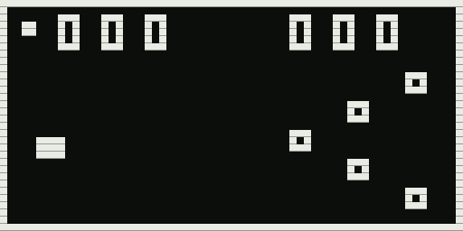
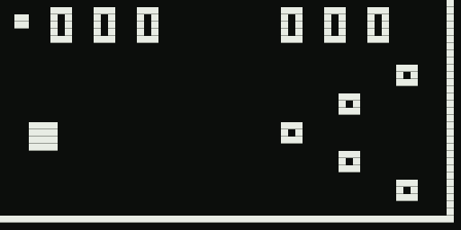
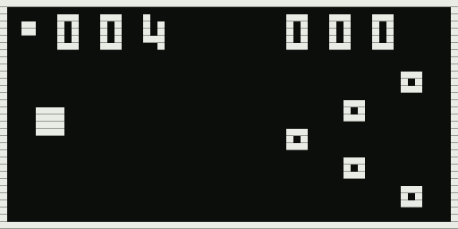

Slide
Joyce Weisbecker · DREAMER no. 11 (1981-07) p. 22 1K RAM



Two players slide three pucks each at spots worth 2, 4 and 8 points. The puck bobs up and down at the left; holding 0 freezes it and the longer you hold, the further it slides after release. The highest possible score is 216. Printed without an author's name in the DREAMER, it is Joyce Weisbecker's Slide for the RCA COSMAC VIP: the code is the same as the VIP version, apart from the addresses.
Keys
Hold 0 to stop the puck, release to launch.
Files
| File | Version | Load | Run |
|---|---|---|---|
| Slide.c8 | main | 0200-0383 | C000 |
Listing as transcribed (with notes): slide.txt
Source
DREAMER no. 11 on archive.org, p. 22 (PDF page 24). Author: Joyce Weisbecker.
Corrections applied
- 0382 = 00EE (issue 16 erratum: the last byte was left off the listing; already hand-written on the scan).
Open doubts
None.